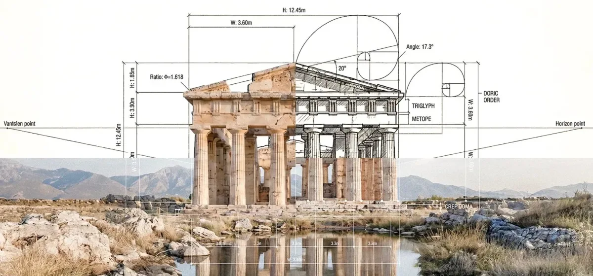
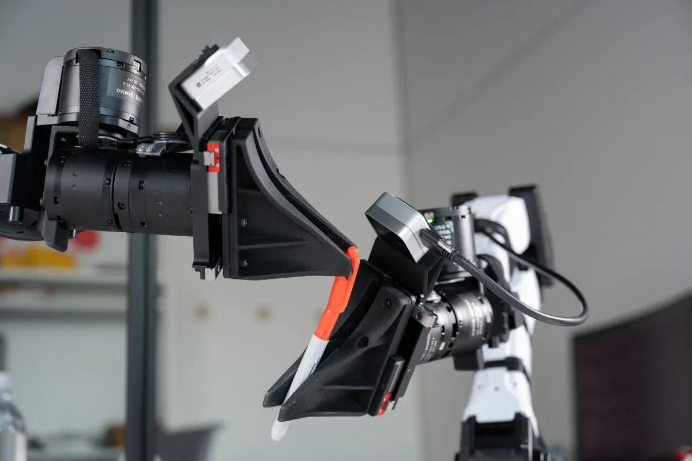
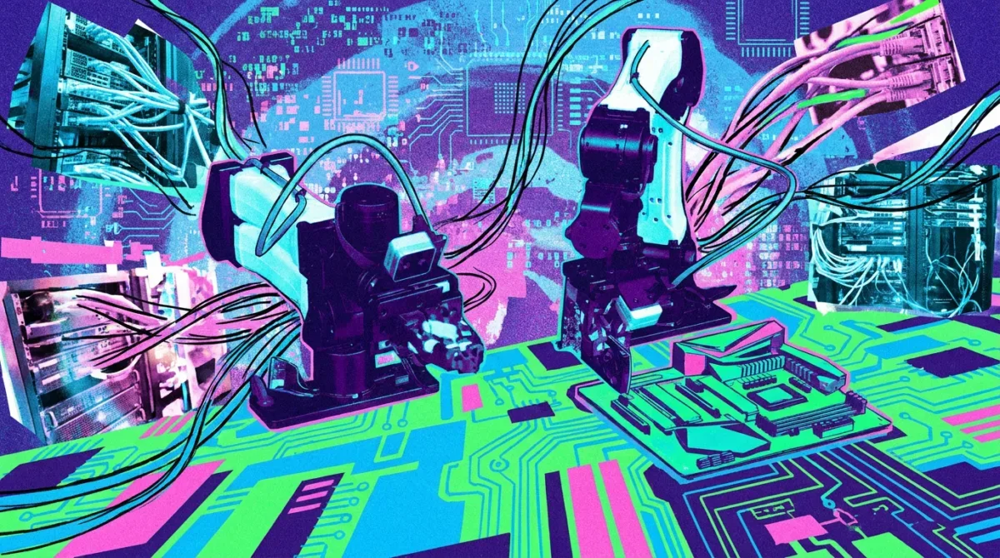
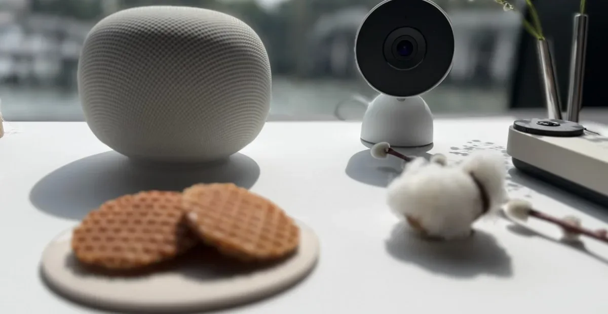

ЛабораторииКод
Amazon Bedrock AgentCore: доступ к корпоративным и внешним данным для ИИ-агентов
Новые инструменты Amazon Bedrock AgentCore: доступ к документам, веб-данным и обратная связь для улучшения агентов
AWS Machine Learning Blog
17 июн.Релизы, исследования, продукты, инвестиции и AI-рынок.
Архив · 741 новостных материалов · Автоматическое пополнение приостановлено
Новые инструменты Amazon Bedrock AgentCore: доступ к документам, веб-данным и обратная связь для улучшения агентов

Канадский пенсионный фонд ставит $741 млн на дата-центры Индии — вслед за Amazon, Google и Meta

Стартап поднял $27 млн, чтобы ИИ в праве и медицине перестал галлюцинировать

Кто будет собирать данные для роботов — и почему крупные лаборатории платят за это стартапу

iPod Shuffle как антидот смартфону: почему «медленные» гаджеты снова в моде

Как OpenAI учит предсказывать сбои ИИ до релиза — и почему стандартные тесты дают осечку

Роботы Nvidia учатся сами: ИИ-агенты пишут код, тестируют гипотезы и достигают 99% точности

Google Home Speaker с Gemini — предзаказы сегодня, старт поставок 25 июня за $99
Meta внедрила ИИ-поиск по постам Facebook: полезные советы и галлюцинации в одном флаконе

Европейский ИИ провалил тест на дезинформацию: Mistral — 47-е место из 60

Каждый второй абзац заключения в дипломе 2025 года выглядит как машинный текст — данные ReText.AI

Открытый набор навыков от Amplicode учит ИИ-агентов корректно работать с Spring Data JPA, повышая качество кода даже на моделях среднего класса.

Дата-центры в Москве строят собственные электростанции из-за дефицита сетевой мощности

Тестируем модный скилл Caveman: экономия токенов оказалась мифом, а качество задач упало

Как измерить опыт разработчика объективно: от DORA до DX Core 4 — разбор ключевых фреймворков

За пару часов понять разницу между ИИ-агентом и чат-ботом и найти задачи для автоматизации — что внутри бесплатного курса.

Как дать ИИ-агенту право менять данные на складе — и сохранить аудит и безопасность

ASCO 2026: ИИ-симуляторы ускоряют решения ординаторов на 28% — и создают новый риск

ИИ слушает интервью и подсказывает вопросы, которые поставят кандидата в тупик

Claude Code случайно снёс продакшен на AWS — история восстановления БД и уроки для инженеров.

BIM застрял в презентациях, а камеры смотрят только после ЧП — что реально меняет стройку в 2026 году

Математики объединились против ИИ: что не так с достижениями OpenAI и чем это грозит науке

Практическое руководство по генерации тестовой документации с помощью ИИ: контекст, промпты, ревью и формат для TMS.

ЭвоКарго объяснила, почему датчики автономного грузовика врут — и как система всё равно едет точно

Как отличить реальную пользу ИИ от хайпа: метрики, которые связывают бизнес-цели с фактическими показателями.

Главный инженер Claude Code о пяти новых нормах работы, когда ИИ пишет код быстрее, чем люди успевают его проверять.
Основатель продал ИИ-стартап без выручки. Вот почему инвесторы были неправы — и чему учит эта сделка
Как чернокожие основатели становятся инвесторами, чтобы исправить дисбаланс в венчурном финансировании
Поговорите с Pinterest: новое приложение для шопинга использует ИИ, чтобы понять ваш вкус.
DeepL купила Mixhalo: перевод речи в реальном времени теперь и на стадионах